This document has two kinds of illustrations: class diagrams and object diagrams. A class diagrams shows static structure of types and their inheritance and ownerhip relations. An object diagram represents composition of objects at runtime. In these diagrams rectangles represent classes, rounded rectangles represent objects and arrows represent their relationships.

The component and container classes are used for building hierarchies of objects at runtime. The Component class is the base class of the Control class that represents a Windows control. It is also the base class of the classes that have no window handle of their own but form a hierarchy such as menu items. A component has pointers to its siblings and to the container object that owns it. A component can be part of at most one container at any given time. When a component is added to a container, it is automatically removed from any possible previous container before adding it to a new container.
A container object owns components added to it and is responsible for deleting them when itself goes out of scope or gets destroyed. It has pointers to the first and last child component and to a parent component. Typically a parent component has a container object for holding child components.

The Control class represents a Windows control window. It is the direct base class of standard Windows controls such as text boxes and labels, and also an indirect base class of container windows such as the panels and toplevel windows. A control window has a window handle that is obtained using the CreateWindow Windows API function. If the control window is a child window, the window handle gets created when the child is added to a parent that has already a window handle, or later when the parent window gets its own window handle. At this time the visual parent window-child window relationship is created. When a control window receives its window handle, it calls the OnCreated() member function that by default fires the Control.CreatedEvent() event. The window handle for a toplevel window is created in the Control's constructor. It also fires the Control.CreatedEvent() event, but any overridden OnCreated() member function will not be called, because overridden member functions will not be called from the constructor of a base class.
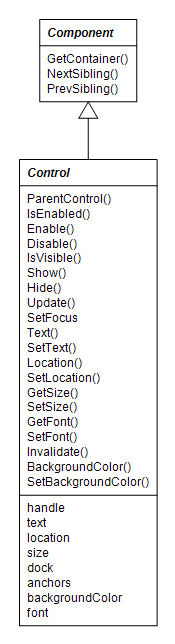A control window has a window text, location, size, and a background color. It can be docked or anchored to an edge of a parent window. The font of a child control window is by default null, in which case it uses the font of its parent window if that has one, or the font of its parent's parent window if it has one and so on. Each toplevel window has a font that is by default Microsoft Sans Serif. The font of a control window can be explicitly set in which case it is also used as the font for its child windows if their font is not explicitly set.
The set of protected virtual member functions that by convention begin with "On" are used for notifying derived classes and classes that have subscribed for receiving events that some condition or property has changed. A class derived from Control class can receive notification for some condition by overriding the notification function for that condition. By default the "On"-member function in the base class fires a corresponding event. For example OnClick() function in the Control class fires the clickEvent event. Typically the first thing an overridden notification member function in a derived class does is to call the base class implementation of that notification function, so that subscribers of the corresponding event will be notified.
The event dispatch mechanism is based on the Event class template that is parameterized with a handler type and an event arguments type. The event arguments type is by default empty. An instance of the Event class captures event handler member functions added to it. Technically the handler type is a class delegate type in Cmajor language terminology. A class delegate is like an object-oriented function pointer that can be bound to a specific member function of a specific object. Typically the member function belongs to the same class that calls the AddHandler() function of the event, so that the object is implicitly the calling class object. The event can be fired by calling the Fire() member function of the event object with either empty argument list when the handler takes no arguments, or with an event argument object, when the handler type takes a parameter. The Fire() function calls each bound handler member function in turn.
The following class diagram shows a situation in which a user-defined window called MyWindow creates a Button object called okButton in its constructor, adds a handler member function OKButtonClick() to the clickEvent event of the Button by calling the AddHandler() function with OKButtonClick, and adds the okButton as a child of MyWindow. When the user clicks the okButton, Windows sends a control notification message to the MyWindow class that calls the OnClick() member function of the Button. The OnClick() function of the button calls the OnClick() function of the Control base class that fires the event by calling the Fire() function of the clickEvent. Now that the OKButtonClick is one of the event handlers in the handler list of the clickEvent event, it gets called.
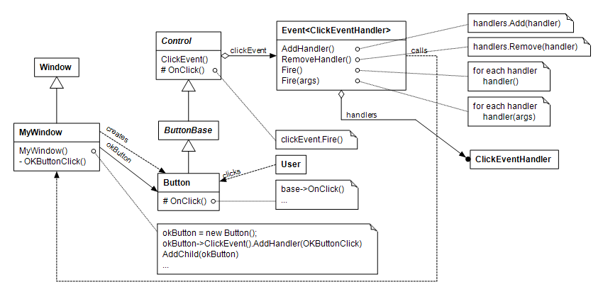In the diagram the ClickEventHandler is shown as a class symbol although it really is a class delegate type.
The ContainerControl class manages child controls and acts as a parent window to them. It has a container object that keeps the child controls in a linked list.
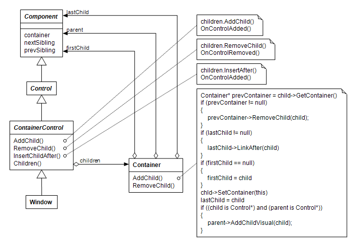When a child control is added to the container, the control is first removed from any previous container, and then added to the new one. After that, the child control is visually created if the container control itself is already visually created, or otherwise it is added to a a list of children to be created visually later. The container control calls virtual OnControlAdded() and OnControlRemoved() member functions for controls added and removed respectively. The implementations of those functions in the Control class fire corresponding Control.ControlAddedEvent() and Control.ControlRemovedEvent() events. When the size of a container control changes, it arranges the child controls that have dock or anchor attributes set.
The library provides familiar common Windows controls that can be put into a dialog box.
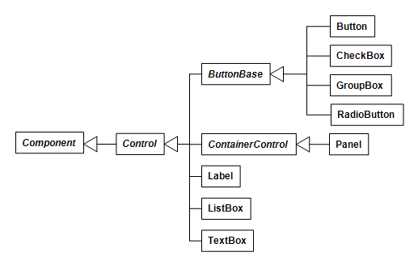The Button control, as all controls derived from the ButtonBase class, have standard "BUTTON" window class style. When a button is clicked, the overridden OnClick() member function will be called. The default implementation fires Control.ClickEvent() event and sets the dialog result of a containing window. The dialog result will be returned as the value of the Window.ShowDialog() member function if the containing window is shown as a dialog.
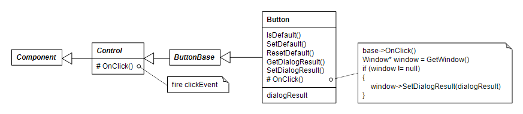If the button is created with ButtonStyle.BS_DEFPUSHBUTTON style or Button.SetDefault() member function is called, the button will act as the default button in a dialog. The OnClick() member function of the default button will be called if the user presses the ENTER key in a dialog and the input focus is not in another button control.
A check box toggles its state when clicked. When the state changes it fires the CheckedChanged() event. A check box can be autosized. Then it calculates and sets its dimensions by measuring its text rectangle using its font.
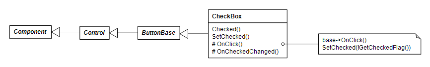Radio buttons are typically added to a group box. Then one of them will be checked at a time. A radio button can also be autosized.
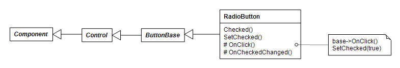Curiously enough, a group box is in Windows a kind of button. A group box has a container object and acts as a parent window to the child controls added to it. When a group box contains radio buttons, it keeps track which one of them is currently checked, and the checked radio button can be changed from the group box.
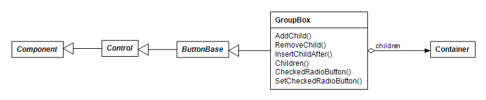The panel control is not a standard Windows control but it might be useful in dialog boxes for grouping and arranging child controls.
A label shows static text. It has standard "STATIC" window class style. It can be autosized.
The ListBox control has standard "LISTBOX" window class style. Unlike its Windows Forms cousin, a Cmajor list box control shows only string items, not other kinds of objects.
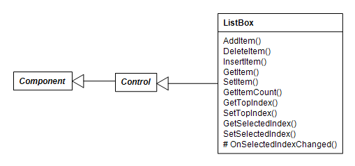A text box shows editable text. The TextBox control has standard "EDIT" window class style. It can be multiline.
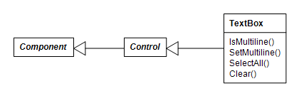According to the GoF Design Patterns book a decorator component is one that encloses another component and can add responsibilities to it dynamically. The System Windows library has three decorators: the BorderedControl class that draws a border around another control, the PaddedControl that adds margins to another control and ScrollableControl that adds scrolling capabilities to another control. The decorator controls take ownership of their child control and delete the child when destroyed. A decorator control acts as a parent window to its child.
The constructor of the BorderedControl class takes a child control as a parameter. When asked to paint itself, the bordered control draws a border around the child. Also when the child receives or loses the input focus, the border color changes. When the location or size of the bordered control changes, the bordered control repositions its child.
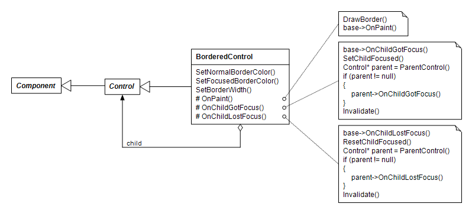The padded control constructor also takes a child control as a parameter, adds padding to the child, and repositions the child when its position or size changes. The default margin is 3 pixels added to the left, top, right and bottom sides of the child.
The ScrollableControl class adds scrolling capability to its child. The scrolling mechanism is not completely invisible to the child, but requires some child collaboration.
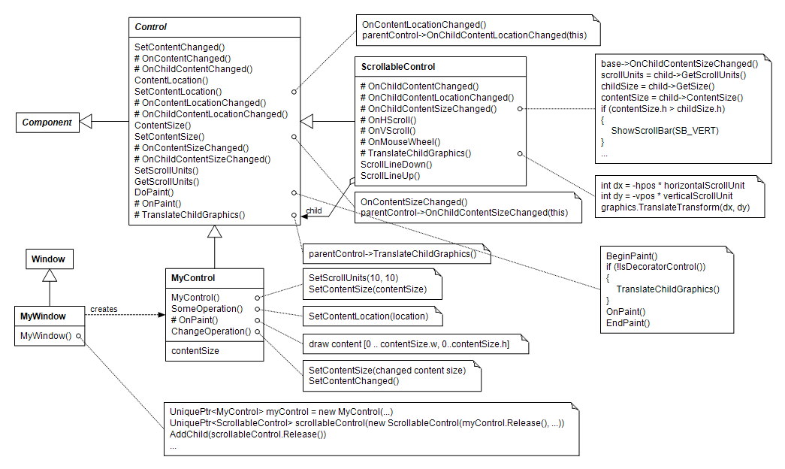Suppose we want to implement a scrollable control called MyControl. For MyControl to be scrollable it must set units of scrolling using the SetScrollUnits() member function and the size of its entire content using the SetContentSize() member function. If MyControl shows textual content, the scroll units might be the average width and height of one character in pixels, and the content size would be the size of the bounding rectangle of the entire text, for example. When an instance of MyControl is given as argument to the constructor of the ScrollableControl, the ScrollableControl instance is the parent window and the MyControl instance is its child window. When MyControl calls the SetContentSize function, the Control.SetContentSize() function notifies the ScrollableControl parent that has overridden the OnChildContentSizeChanged() member function that the content size of the child has changed. The ScrollableControl obtains the scrolling units and the content size from its child, and if the content size is larger than the client size, it shows scroll bars.
When MyControl receives WM_PAINT message from Windows, the message processing function of the Control class invokes Control.DoPaint(). DoPaint() constructs an instance of a Graphics class and then calls the TranslateChildGraphics() function of the parent. The TranslateChildGraphics() adjusts the transformation matrix of the Graphics object so that scrolled portion of the content will be visible. It then calls the OnPaint() member function. The MyControl.OnPaint() can draw the entire content rectangle [0...contentSize.w, 0...contentSize.h] without knowing which part of it will be visible. If MyControl wants to show some part of its content, it can call the SetContentLocation() function, that notifies the ScrollableControl parent to adjust the scrolling parameters and invalidate the client area.
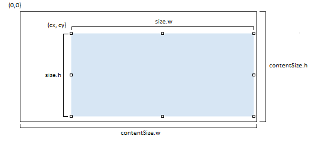The MyWindow constructor creates an instance of MyControl and then gives it as an argument to the constructor of the ScrollableControl class. Then it adds the constructed scrollable control as a child of itself.
The main function of a Cmajor Windows GUI application consists typically of construction of a main window and then calling static Application.Run() member function with the main window as argument. Construction of a window, or any other class derived from the Control class for that matter, will implicitly call static Application.Init() function that will initialize the GDI+ library and setup message processing and key preview function addresses. Because GDI+ library will not be initialized until the first window is created, construction of fonts and other classes that use the GDI+ library will not work before that moment unless you call Application.Init() explicitly first.
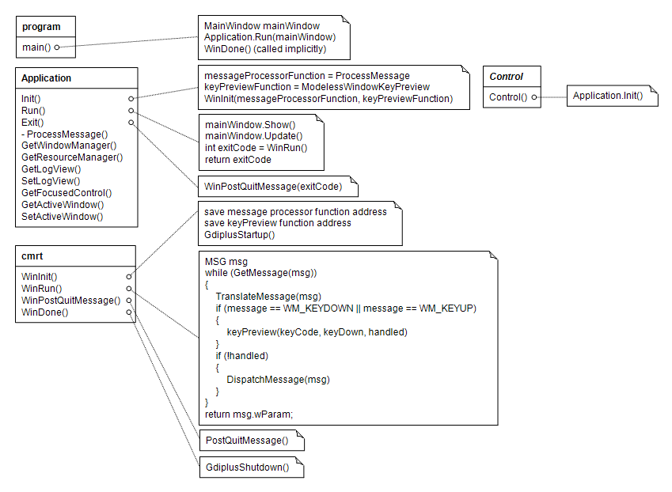The Application.Run() function will show the main window and call the WinRun() function of the Cmajor runtime library that contains a message loop. Closing the main window or calling the Application.Exit() explicitly will post a quit message that ultimately ends the message loop. After that the Application.Run() will return to the main function with the exit code passed to Application.Exit() as argument. The main function will implicitly call the WinDone() function of the Cmajor runtime library that shuts down the GDI+ library. Finally the main function returns the exit code to the operating system and ends the execution of the program.
The Cmajor Visual Studio extension has no project templates for Cmajor Windows applications and libraries. You can however work with Cmajor Windows applications in Visual Studio, if you create a Windows GUI application project using Cmajor Development Environment or create a .cmp project file manually, and then use the cmp2cmproj project conversion tool to convert the project file to a .cmproj project file understood by the Visual Studio extension. The syntax of the project file is quite simple so a .cmp project file can also be created with any text editor.